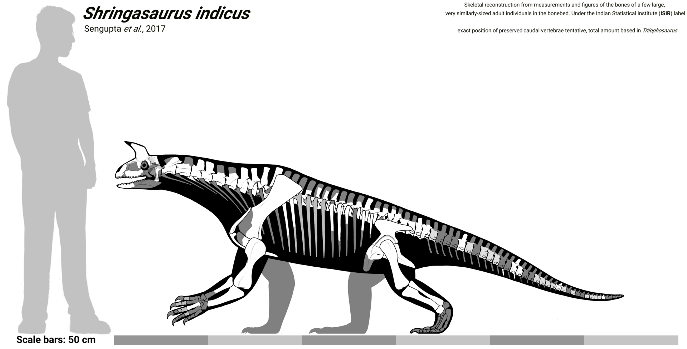
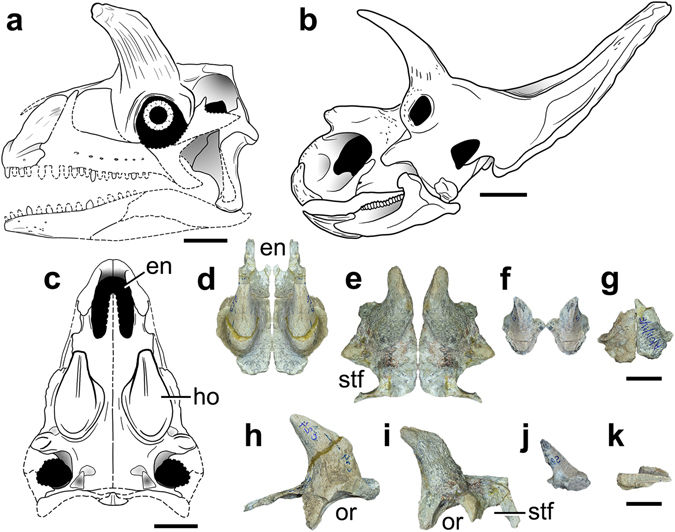
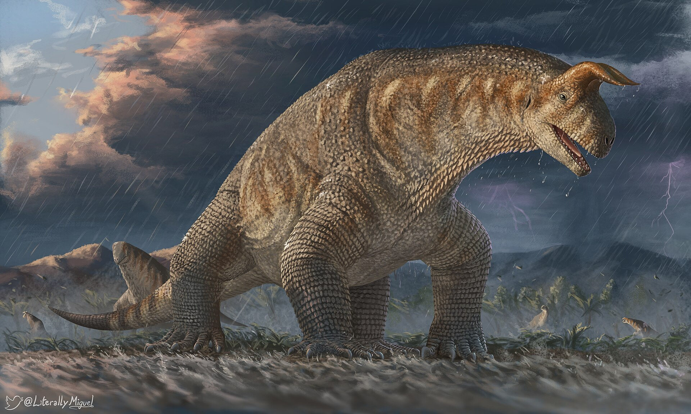
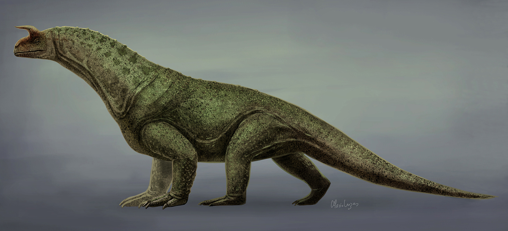
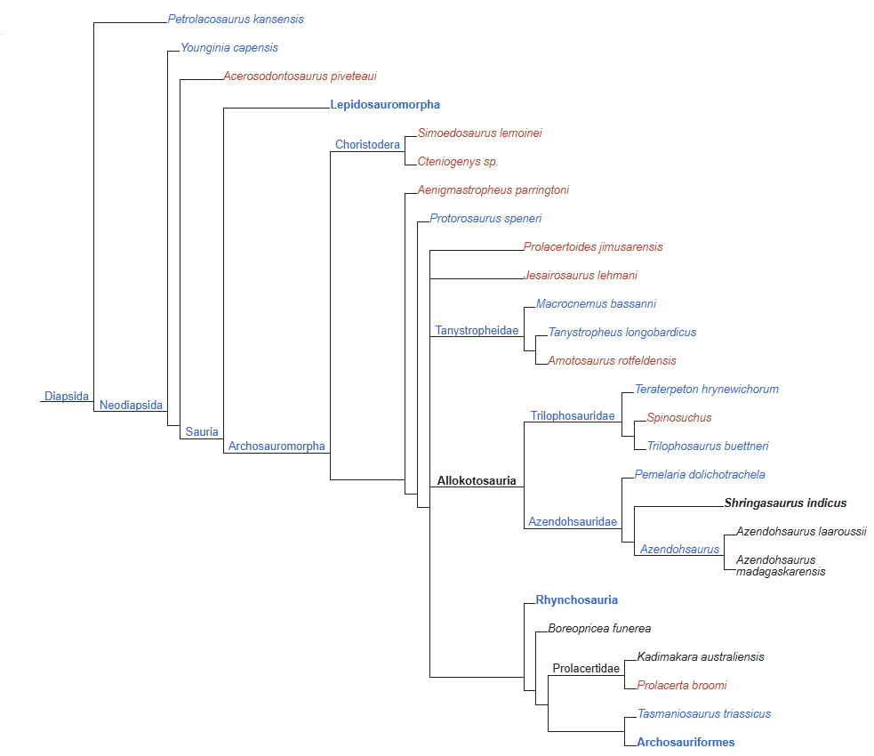
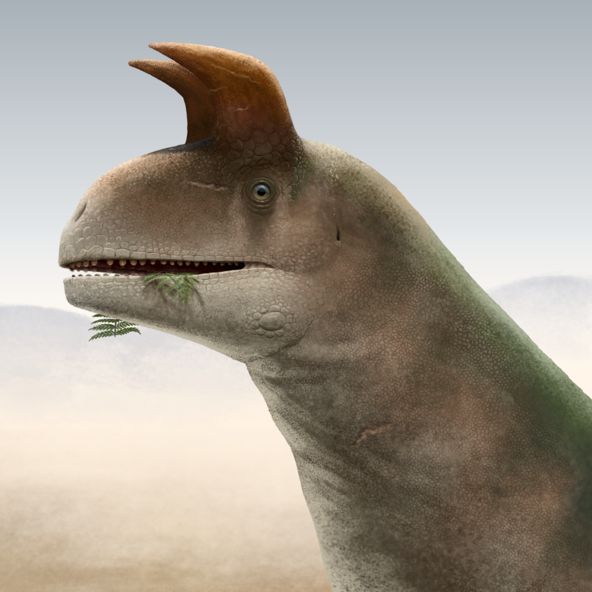

Shringasaurus
Shringasaurus ("lagarto cornudo", del sánscrito शृङ्ग (śṛṅga)= "cuerno", y griego Antiguo σαῦρος (sauros)= "lagarto") es un género extinto de arcosauromorfo alokotosaurio que vivió durante el Triásico Medio (Anisiense) en lo que hoy se conoce como la India. Se conoce una única especie, S. indicus. cuyo espécimen proviene de la Formación Denwa en el estado de Madhya Pradesh. Es un taxón hermano de Azendohsaurus. Al igual que los dinosaurios ceratópsidos, Shringasaurus tenía dos cuernos frontales que pueden haber utilizados para exhibición.
Shringasaurus
Rango temporal: Anisiense
Triásico Medio

Taxonomía
- Reino: Animalia
- Filo: Chordata
- Clase: Sauropsida
- Infraclase: Archosauromorpha
- (sin rango): Allokotosauria
- Familia: Azendohsauridae
- Género: Shringasaurus
Especie tipo
Shringasaurus indicus
Sengupta et al., 2017
Descripción

Shringasaurus era un animal cuadrúpedo con una apariencia maciza, acercándose a los 3 metros de longitud. El cráneo era rectangular con dos cuernos relativamente cortos; estos cuernos tienen una forma cónica. Su cintura escapular es muy robusta y, como en Azendohsaurus, sus dientes tenían forma de hoja. Shringasaurus poseía una serie de características que difieren de los de otros arcosauromorfos troncales por la siguiente combinación de rasgos: marinas externas confluentes; el par de cuernos supraorbitales orientados en sentido anterior-dorsal; dientes marginales y palatinos de tamaño y forma similares con grandes dentículos; vértebras cervicales, dorsales y del sacro con articulaciones accesorias del hiposfeno-hipantro, las vértebras cervicales mediales-posteriores, dorsales y al menos las dos primeras caudales con procesos mamilarios en las espinas neurales; cervicales 2-5 con epipófisis (se desconoce en la sexta cervical); vértebras dorsales con láminas espinoprezigapofisial y espinopostzigapofisial; dorsales 1-12 con hojas espinodiapofisiales; dorsales anteriores con espinas neurales el doble de grande que sus respectivos centros vertebrales. Shringasaurus indicus tenía un cráneo relativamente pequeño con un hocico corto y redondeado y narinas confluentes. El premaxilar no tiene un proceso delantero y el proceso postnarial tiene forma de lámina y un surco anteroventral lateral en su base, como ocurre en Azendohsaurus madagaskarensis. El premaxilar tiene cuatro alvéolos dentales. El nasal tiene un proceso largo anterior ventricular.


Las coronas en los márgenes de los dientes son apenas desarrolladas, con una base algo bulbosa y numerosos dentículos en ambos márgenes, que se asemejan a los de Pamelaria dolichotrachela. Los huesos prefrontal y postfrontal son gruesos y casi excluidos del frente del borde de la órbita ocular. Los huesos prefrontal, nasal, frontal y postfrontal de cada lado del cráneo están fusionados entre sí en los individuos maduros (es decir, los huesos permanecían sin fusionar con su contraparte a lo largo de la línea sagital). La bóveda craneana tiene un cuerno anterior curvado y cónico, de altura casi igual a la del resto del cráneo en los individuos grandes. La superficie del cuerno está decorada con surcos y rugosidades tangenciales, características que han sido identificadas como marcadores osteológicos de cubiertas córneas. El parietal tiene una fosa supratemporal muy estrecha la cual está separada de su contraparte por una superficie amplia y plana, carente de una cresta sagital. El cuadrado tiene un extremo dorsal en forma de gancho, como ocurre en otros alokotosaurios. Las coronas en el vómer son más lanceoladas que aquellas de la dentadura marginal. El parabasfenoides tiene un eje principal oblicuo, anteroventrural.
Los centros vertebrales de las cervicales anteriores-mediales de Shringasaurus son aproximadamente 1.5 veces más largas que altas, lo que indica un cuello relativamente largo, pero proporcionalmente más corto que en A. madagascariensis y Pamelaria dolichotrachela. Adicionalmente, las espinas cervicales neurales son proporcionalmente mayores que en las últimas dos especies. Las vértebras dorsales de la primera a la duodécima tienen hojas paradiapofisiales, centrodiapofisiales, prezigodiapofisiales, espinodiapofisiales y espinoprezigapofisiales que se conectan con fosas profundas de forma similar a los de los saurópodos basales. Hay epipófisis en las vértebras anteriores cervicales y están ausentes en las cervicales séptima a novena. Los procesos mamilarios, un par de expansiones transversales en la parte distal de la columna vertebral que no convergen con la columna vertebral, no están desarrollados, extendiéndose lateralmente y sobresaliendo antes del extremo distal anteroposterior de la columna vertebral en la menos desde la quinta hasta novena vértebra cervical, todas las vértebras dorsales recuperadas y las dos primeras caudales. La primera vértebra del sacro es levemente más larga que la segunda y ambas tienen costillas de tamaño similar. Se conserva un intercentro entre las dos vértebras caudales anteriores.
La clavícula se halla constreñida cerca de su extremo ventral y la interclavícula tiene forma de letra T con un breve proceso anterior y un proceso posterior largo en forma de paleta como ocurre en A. madagaskarensis. El omóplato tiene un distintivo margen anterior cóncavo, como en A. madagaskarensis, y diferente al omóplato casi rectangular de P. dolichotrachela. El omóplato tiene un extremo distal moderadamente expandido anteroposteriormente. El coracoides es parte de una fosa glenoidea y tiene un proceso postglenoideo corto. El húmero es muy estrecho en su zona media y posee una cesta que ocupa la mitad del hueso. El cúbito tiene un proceso del olecranón apenas desarrollado.
El ilion tiene un proceso semicircular bien desarrollado y un proceso postacetabular largo y dorsoventralmente poco profundo. El acetábulo está cerrado por completo y se halla delimitado anteriormente por una cresta supra-acetabular baja y gruesa. El pubis tiene un apron transversalmente ancho que se contacta con sus contraparte y, tiene un contacto extenso proximalmente con el isquion. El fémur es sigmoide con un trocánter interno prominente que no converge con la cabeza femoral como en A. madagaskarensis y Trilophosaurus buettneri. El extremo distal del fémur es transversalmente más ancho que el extremo proximal y el cóndilo fibular es levemente más extendido en sentido distal que el cóndilo tibial.
Historia
Los huesos de fósil de Shringasaurus fueron recuperados de un depósito de lutita roja en la parte superior de la Formación Denwa. Al menos siete individuos de diferentes edades fueron enterrados en un área de 25 metros cuadrados. La mayoría de ellos estaban desarticulados, excepto un esqueleto parcialmente articulado. El holotipo consta de un cráneo parcial (prefrontal, frontal, postfrontal y parietal) con un par de grandes cuernos supraorbitales.
Clasificacion
De acuerdo con Sengupta y colaboradores, Shringasaurus es un miembro de la familia Azendohsauridae dentro del clado Allokotosauria, que a su vez constituye un grupo basal dentro de Archosauromorpha. Junto con Azendohsaurus, forma la subfamilia Azendohsaurinae.
Cladograma según Sengupta et al.:

Paleoecología

Shringasaurus vivió en lo que hoy en día se conoce como la Formación Denwa junto con el pez dípneo Ceratodus sp., el capitosáurido Paracyclotosaurus crookshanki, el mastodonsáurido Cherninia denwai, un trematosáurido loncorrinquino, rincosaurios y braquiopoideos sin describir, y dicinodontes de tamaño pequeño a grande. La lutita roja en la cual se encontró a Shringasaurus puede ser un indicio de que el terreno corresponde a una tupida llanura de inundación con arbustos.